Cupertino High School Robotics
2473: Tino Goldstrikers
blogs
Cupertino High School Robotics
2473: Tino Goldstrikers
FRC Summer Build: Week 2
This week’s blog post (7/6-7/11) is from Rucha and Carisa! FTC summer training is starting up soon as well, so look forward to their updates! Here’s a sneak peek:
This week’s blog post (7/6-7/11) is from Rucha and Carisa! FTC summer training is starting up soon as well, so look forward to their updates! Here’s a sneak peek:
Rucha (software):
This week, we covered a lot of different material. To start off, we had to understand all the different processes on the robot. We started the week with pneumatics. We had to figure out how the system worked first. We could not proceed to the writing the code until we understood how the valves worked to control the air pressure. Then, we wrote code that would control these systems. Firstly, we wrote code that would use two different buttons to pressurize or release the air. We then realized that it would be more convenient to the driver if they could control the entire process with a single toggle button. Using this idea, we were then able to modify the code to come up with an easy way to use the pneumatics.
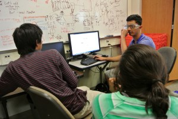
The rest of the week was spent largely on encoders. At first, we ran into many problems while working with the encoders in the autonomous period. More often than not, the robot did not react how we intended it to. We also discovered that there is a minimum amount of power that must be used on the motors for them to function correctly. We spent the next day looking into how PID affects the motors and encoders. Since this was a new concept to most of us, we researched each aspect and tried to figure out how we could utilize it to benefit us the most. Because we tested the values with the robot supported on blocks, we would have to recalculate all the values of PID later, when the robot is on the ground. Therefore, we decided to focus on other aspects of the encoders before focusing on PID.
Throughout the week, we have been constantly updating our drive code. Now, we have incorporated encoders into the drive code. However, there are still several different points we need to update. Firstly, we must incorporate a fail-safe for the encoders in our drive code. This is imperative, as the robot will not move as intended if even one encoder does not work. Secondly, we need to do a straight line test on the robot to make sure that all the encoders are working properly. However basic this test may seem, it is essential for us to ensure the accuracy of our code and the hardware. One important conversion that could prove useful is the encoder ticks to inches correlation. This will come into play once we know how far we need to move in our final autonomous code. Finally, we wish to delve into image processing. Since this is a new concept to many of us, we will need to learn and understand this concept before trying to code it.
My favorite part of the week was probably working with the pneumatics. Before this, I didn’t have any exposure to this system. It was interesting to explore both the hardware and software aspects. On the robot, our primary source of power comes from our motors, so it was fascinating to see how another source can be used just as effectively.
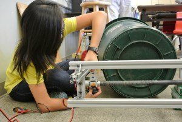
Carisa (hardware):
During the second week of build season, the bin intake group (aka lazy can group) worked hard to figure out and test a few ways on how to pick the bin up. We realized that last week, that just having a conveyor belt on our chassis wasn’t enough to lift the bin but it was clearly enough to pull the bin in once it was on the chassis. The lazy can group, consisting of Mavis, Samantha, Arushi, and I, started to figure out different methods of picking up the can. We came up with two main ideas that we were going to prototype. One of them consisted of using an angled wheel to spin and pick it up, the other idea was to use ball casters to squish the bin and push it up. The elevator team came out to helped us out with the diagonal wheel idea while we tested out the squeeze can idea. With the help of our mentors Juan-Luis and Mr. Williams, we made important calculations to determine the dimensions of the prototype. Our project manager Mavis lead us through the calculations such as figuring out how wide the arms have to be and how much it must close in to lift the bin. The following day, we were fleshing out the final design and detailed measurements. After that, we got right on to building! I worked closely with Mr. Kapoor on creating the pivot point for the arms that the ball casters sit on. He trained me on how to use the mill because we had to cut out a few aluminum blocks. I definitely feel more comfortable using the mill after the day. So far, the project is going to plan without too much trouble. I am looking forward to continue building next week!
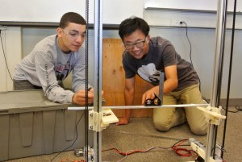
July 13, 2015
FRC Summer Build: Week 1
And we’re off! This week’s blog post (6/29-7/3) is from Sam and Jake! This week was the first week of build season, officially ending summer training (although technically it involves some training…and takes place in the summer…). The main objective of build season this summer is for new members to establish and develop key robotics skills. Whether that is adding onto previous FTC knowledge or simply learning about new and incredibly interesting FRC topics, the main objective is to take something important out of this time and ultimately become a better roboticist and individual. To delve into specifics, we finally created the hardware and software divide with hopes of better communication and skill development across all fronts. For many roboticists, one of the hardest decisions is to find where their expertise and interest lies. Luckily, for many members of CHS Robotics, change is embraced and encouraged if an individual would like to do so.
And we’re off! This week’s blog post (6/29-7/3) is from Sam and Jake!
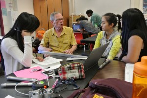
Sam (software):
This week was the first week of build season, officially ending summer training (although technically it involves some training…and takes place in the summer…). The main objective of build season this summer is for new members to establish and develop key robotics skills. Whether that is adding onto previous FTC knowledge or simply learning about new and incredibly interesting FRC topics, the main objective is to take something important out of this time and ultimately become a better roboticist and individual. To delve into specifics, we finally created the hardware and software divide with hopes of better communication and skill development across all fronts. For many roboticists, one of the hardest decisions is to find where their expertise and interest lies. Luckily, for many members of CHS Robotics, change is embraced and encouraged if an individual would like to do so.
Hardware vs. Software is often seen as the classic and almost inevitable conflict in robotics, one that I, personally, had a hard time reconciling. However, considering Robotics as a whole, one part can’t function without the other. Thus, both perspectives of working in hardware and software will be addressed in this blog post.
From working on a hardware team for the past two years in FTC, one of the most critical acknowledgements made is that the hardware team is responsible for not only the actual robot, but the consideration of many potential structures and prototypes. This week, hardware focused on the tote intake system, as part of our overall focus on streamlining the robot design for the past 2015 season. We broke off into multiple groups, each tasked with designing a structure/system concept to assist with tote intake. There were 2 groups, each working on a fork-lift and chute, respectively. This week focused on three main aspects of hardware planning phases: the strategy, concept, and investigation. Every plan made was meticulously detailed on online documents (much like chemistry labs) and effectively described the plan, procedure and milestones of each design. Additionally, there was a very important lecture given by Mr.Williams on torque, the concepts of which one group implemented in their design. In the planning process, all hardware members were challenged to predict and intensively predict all possible drawbacks/concerns and benefits(essentially pros and cons) of the proposed designs.
While the hardware team was learning about the planning and documenting aspects of hardware, software was using a different type of documentation to plan for the upcoming season. Having been one of only a few individuals who transitioned from the hardware to software, I witnessed a subtle difference in not only the teaching style but also my own grasp of the topic. I find that the logic and problem solving aspects are more emphasized and pertinent, but nonetheless useful. Once again using the aspects of the previous season’s software requirements, the new members (including me) were challenged to program the joystick (without which the robot would effectively be a piece of metal, albeit well-designed). The team worked on the programming using the x, y, and z axes of the joystick, attempting to integrate the z-axis (rotation) with sharper turns and pivots. Additionally, the team discussed the possible uses of encoders during the tele-operated and autonomous periods of competition, something not typically done but nevertheless interesting and seemingly beneficial. The overall interface we used was fairly new and included a dashboard and a control panel-type interface that seemed quite professional. Overall, the transition I made this week from hardware to software was not easy in the least—both mentally as well as emotionally— yet, I believe I have the same chance I did for the past two years to grow and improve as a roboticist and person, because they are two separate entities.
Finally, we were able to once again meet our mentors for this season, which was a great experience in itself. We intend to fully take advantage of this great opportunity and hope for more in the future.
This build season is shaping up to be quite resourceful and knowledgeable, hopefully the skills learned and developed now will be of use in the upcoming FRC season.
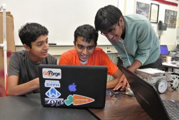
Jake (hardware):
In week one of our mock-build season, the elevator/grabber team fully analyzed the concept we were going towards and looked into investigating the belt elevator. In the first few days, Issam, Chloe, and I looked into the forklift concept the whole team brainstormed. Also with the help of our mentor, Juan-Luis, we found ourselves merging with the conveyor belt (Lazy-Can Method) team. We ultimately decided upon that because the forklift concept-which required us to hold the totes and bin outside the chassis-was not feasible. Although our team has strayed away from the concept we were assigned, we still held true to most of the functions of the forklift. After being a little held back from extra analysis and brainstorming, we as a team decided to work on the elevator before working on anything else. This was must on our list of priorities because not only do the elevator serve us a good transition towards the design of the grabber, but also other teams will need to rely on the elevator once it is built. Although building an elevator is a hefty task to uphold, we were in a lot less pressure designing it and building it because our team mentor, Mr. Charles Williams, had already designed and built (a prototype) an elevator that ran on a belt. I received all of the specifications of the elevator he had built and looked for any tweaks to the elevator we needed to tend to. Luckily, it came to be that the elevator in its complete form (two parallel elevators) can hold around 60 pounds (much more than necessary) and most significantly faster than what we needed. Issam, only one in our team who attended Friday, started the prototype of the elevator based upon the elevator Mr. Williams had built. By the end of Monday’s meeting (which all members attended), we had mounted the second elevator’s Misumi piece on the wooden platform and created pieces for the limit switches.
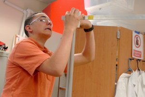
July 08, 2015
FRC Summer Training: Day 8
Today was a shorter training session, but we were still able to cover the basics of pneumatics and pneumatic actuators.
Blog post from Amal!

Today was a shorter training session, but we were still able to cover the basics of pneumatics and pneumatic actuators.
We first began with an overview of the topic by looking over a handout and by looking at the different parts of a basic pneumatics tubing set up. Alex and Mavis gave us a brief run down by first starting of with some terminology (PSI, Upstream vs. Downstream, different fittings) and then gave us an idea of what some of the applications we could use pneumatics for. These applications included using a claw or lift or opening and closing manipulators.
We then were taught about the different components that are needed to create a successful pneumatics system in a FRC robot.
These components include:
The pneumatics control module, which connects and controls the other components; the compressor (creates pressurized air); air tank; release valve; regulator (controls the pressure); solenoids (electric valves that open and close pistons); the various connectors and the pistons which move to make the robot move certain pieces of it.
We were able to see which materials worked best for the different components and certain techniques to manipulate the components to ensure a working system. We used Teflon tape wrapped in the same direction as the threads to try to keep the pressurized air from escaping.
Moreover, we learned about the single acting spring return and the double acting actuators (pistons/cylinders) and its different requirements.
Finally, we reviewed the overall setup of all the components connected and were able to clearly see the setup on two different robots for different purposes.
After the meeting, several members went to Vallco Shopping Mall to watch Pixar’s newest film, Inside Out. I can’t comment on its quality because I haven’t watched it yet.
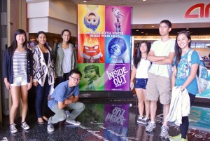
June 24, 2015
FRC Summer Training: Day 7
We started off today by going over the different tools we are expected to know and use during FRC. Alex went over and explained the FRC tool boxes completely and showed us the use and location of each tool. The majority of the tools were completely new to me and I was shocked at how many tools were merely lying around which I completely looked over. The new tools that I was exposed to today will certainly help me achieve more complicated tasks during FRC.
Blog post from Saumya!
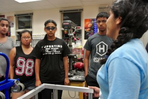
We started off today by going over the different tools we are expected to know and use during FRC. Alex went over and explained the FRC tool boxes completely and showed us the use and location of each tool. The majority of the tools were completely new to me and I was shocked at how many tools were merely lying around which I completely looked over. The new tools that I was exposed to today will certainly help me achieve more complicated tasks during FRC.
After we were introduced to the FRC tools, we were trained on how to use the mill. At first I thought that using the mill would be the same as using the drill press, however, I saw that I was entirely wrong. The mill actually required a substantial amount of precision and accuracy, but in the end it is worth the time as you are rewarded with precise holes and cuts. In order to simply add a bit onto the mill, you had to first insert the bit into a barrel that would hold the bit in place and then place the barrel with the bit into the hole which would rotate the barrel. You secure the barrel by lifting the hood of the mill and screwing in the screw which then attaches to the barrel through the top. Although this process may seem long enough already, there is a whole other process that goes with positioning the material needed to be drilled. First you have to secure the material on a vise which is set on a shifting table controlled by a series of handles. You would then find the correct position of the material in relation to the bit. This step usually takes the longest amount of time. Only after this entire process will you get a precise cut or hole.
After the arduous process of learning how to use the mill, we had a break. We played a game in which everyone had to act out an animal and one person would have to figure out which animal everyone else is depicting. It was really fun as many people came up with awkward actions that “resemble” the supposed animal.
Once we were done with our break, we listened to a presentation on chassis from Varsha and Smiti. We were introduced to a variety of chassis and how each design was beneficial or lacking in which ways. We were also taught on how to choose which chassis to build in order to meet the challenge in the most effective way. We saw how the shape of the chassis was not the only important factor in a good chassis, but the various types of wheels used also formidably impact the performance of the robot.
Ultimately, I thought that today was really fun and a great addition to my summer training experience and the skills I learned today will definitely benefit me throughout FRC.
June 23, 2015
FRC Summer Training: Day 5
Today we concluded a week of summer training by going over some basics in FRC software and wiring, and what to expect in terms of club organization and documentation. We began with a short presentation by Erica, in which she went over how we organize and document the club throughout the season, through
Blog post from Issam!
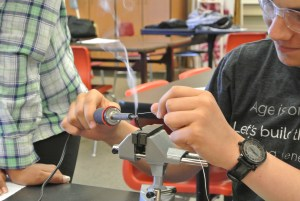
Today we concluded a week of summer training by going over some basics in FRC software and wiring, and what to expect in terms of club organization and documentation. We began with a short presentation by Erica, in which she went over how we organize and document the club throughout the season, through the use of Google Drive. We learned the necessary steps and procedures to make sure we effectively keep track of all of our important documents related to the team and club.
We then split up into groups, and we began by learning the basics of software. Vishal showed us the IDE we would be using for all of our programming of the robot. He went over general code structure, such as how to implement different parts of our code as one cohesive program, and how to deploy our code to the robot once we were ready to run it. In the end, we were able to understand and write our own sample drive code.
Next, we were lectured on electrical wiring, and the variety of wires use on the robot. Mr. Williams showed us how wires distribute power and signals throughout the robot, as well as the different applications of wires, depending on the strength of the current running through. He showed us how to use WAGO connectors on the Power Distribution Boards in order to hook up the wires to distribute the power throughout the robot. He also went over the basics of crimping with us, and showed us the uses of it as well. Finally, we went over how to solder, when to solder, its uses, and we were able to get hands on practice with the soldering iron. Today’s workshop was very helpful and informative, and a great way to end our first week of training.
June 20, 2015
FRC Summer Training: Day 4 - Intuitive Surgical Robonanza
Today, Intuitive Surgical, one of our sponsors, gave us the opportunity to demonstrate our FRC robot alongside 21 of the other FRC teams it supports. We
Today, Intuitive Surgical, one of our sponsors, gave us the opportunity to demonstrate our FRC robot alongside 21 of the other FRC teams it supports. We played a modified game of Recycle Rush in which robots raced to carry totes through an obstacle course, depositing them in a scoring zone on the other side of the field. However, because the majority of the robot’s manipulators had been removed as a part of summer training, we were unable to participate fully in the game, though we were able to score some points by pushing around totes.
For many of the new FRC members, this was their first opportunity to drive the robot in a competitive setting. They also got the chance to check out other robots, and see how other teams tackled the challenges present in the game this year. We look forward to seeing fellow FRC teams in future offseason events and next season!
After the event, we were treated to a yummy lunch. Once again, thank you Intuitive Surgical for supporting us and furthering robotics education in the Bay Area!
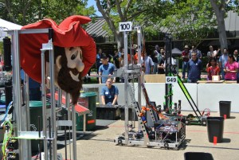
June 18, 2015
FRC Summer Training: Day 3
Today summer training went over the basics of measuring materials accurately, tying knots effectively, and reviewing the game manual thoroughly. It was really exciting to take what we know from FTC and bring those skills up to a higher level of precision and accuracy with the FRC Summer Training Program. It feels awesome to build on the skills we have previously mastered in order to achieve higher goals.
Blog post from Carisa!
Today summer training went over the basics of measuring materials accurately, tying knots effectively, and reviewing the game manual thoroughly. It was really exciting to take what we know from FTC and bring those skills up to a higher level of precision and accuracy with the FRC Summer Training Program. It feels awesome to build on the skills we have previously mastered in order to achieve higher goals.
We started off the workshop by having Alex and Mavis show us around the Roboshack for where the measuring tools are located. After our mentors introduced each measuring device including different scales and calipers, we practiced using the calipers for the first time. I practiced using the digital and dial calipers which were very neat tools that allowed me to measure things more accurately than I ever did in FTC Robotics. Our teams should really own more digital calipers since they are so easy and fun to use!
Once we were done practicing using the measuring tools, we learned how to tie knots. It really did not sound impressive at first, but over the course of the lesson our mentors led, I learned the many useful applications it has on our robots. The most interesting application of string that I learned is that it allow you to have a designated breaking point which prevents damage to the robot when testing. Not only have I come out of this workshop knowing how to tie many types of knots but also learned a few new ways on how to tie my headphones so they’ll never tangle again.
Lastly, we went over the game manual for this year’s FRC challenge, Recycle Rush. Even though I have watched our team compete at San Jose State, I realized that I was unaware of many of the rules in the game. Our mentors also told us what to look out for in the game manual as it is critical to take in the information in order for you to design the robot well. I really liked today’s workshops in summer training today as it really helped me learn new skills that will definitely prepare me for the oncoming season.
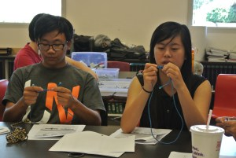
June 17, 2015
FRC Summer Training: Day 2
Training today was a more of an informative day rather than the hands on experience we had yesterday. Regardless, it was helpful for my first year here in FRC. It was a good day of training because more of my peers came, which made me reassured. Day 2 consisted of setting up the robot for drive, driving the robot, diving into the electrical section of robots, learning about the competitions, and looking into one of the manipulators used last season. Driving the robot was exciting, but took a while to set up.
Blog Post from Jake!
Training today was a more of an informative day rather than the hands on experience we had yesterday. Regardless, it was helpful for my first year here in FRC. It was a good day of training because more of my peers came, which made me reassured. Day 2 consisted of setting up the robot for drive, driving the robot, diving into the electrical section of robots, learning about the competitions, and looking into one of the manipulators used last season. Driving the robot was exciting, but took a while to set up.
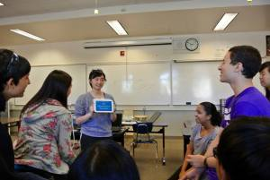
To start off, we used the “FRC Driver Station” program and the “FRC SmartDashboard” program to connect to the robot. After the first attempt of driving the robot, we found that there was an issue with electrical portion of the robot. Nevertheless, the issue was solved and we had a brief moment to control the robot. Afterwards, we listened to a presentation on the competitions and what we should expect in one. The presentation helped me understand how I should act in a competition. The tips and tricks to prepare for a competition were also helpful. We also got to play some more charades and watch the NBA Finals on the big screen during break!
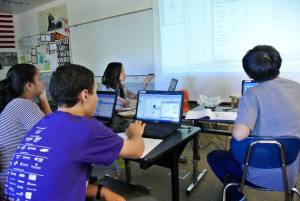
To wrap up training, the seniors introduced the electrical portion and control system of the robot. I found it easier to understand when the mentors made connections with our past experiences in FTC. For example, Alex compared the RoboRIO with the NXT and the D-Link Radio with the Samantha in FRC and FTC, respectively. Overall, I enjoyed Day 2 of training. It was fun, informative, and somewhat interactive. I am also thankful for the mentors creating packets of information so that the trainees, such as I, can follow along the mentor teaching the lesson.
June 16, 2015
FRC Summer Training: Day 1
Blog post from Samantha!
When I stepped into Mr. William’s room today for the first session of FRC summer training, I didn’t know what I going into and I genuinely had no idea what to expect. To be honest, I was even maybe a little bit nervous, because this was going to be the first day of many where I would be working alongside the masters to create robots bigger than me. But once i walked into the very familiar room and was greeted with a very familiar “You’re late”, I felt right at home. There were two main sessions to the training that day: an Open Office Workshop, and a robot dissection.
The first part of the learning consisted of a walkthrough of the basic tools in Open Office, a design software, allowing us to create our very own designs. I predict this program will be immensely useful in the future because it allows us to create neat dimensions labeling each part of our design and layer different parts of the robot’s design on top of one another. Learning all of the tools used here and getting to explore all the different applications was a lot of fun because we discovered a lot of useful implements that made designing easy.
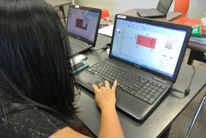
Then we paused for a quick game of charades, where we were joined by a second team of fellow students who were dissecting a robot while we were exploring Open Office. I had a lot of fun watching everyone’s reactions and joining the screaming commotion. It was funny because people kept hitting the back button and exiting out of the game.
Finally, we started on the last segment of today’s training with a brief overview of all the parts of an FRC robot, such as the Jaguar, the cage, and limit switches. I found it really interesting how our FRC team came up with so many creative ways to complete their goals. The materials and mechanisms that they used were fascinating as well, like the 4-legged parallelogram that allowed a portion of their arm to stay horizontal at all times. Their use of pistons and air was also extremely ingenuitive. After the overview, we began to delve deeper into the inner workings of the robot with a dissection of its recycle bin arm. We learned how ball bearings came into place and discovered how the balance of power and stability was vital to the efficiency of the robot. I got down and dirty with the new, bigger, FRC tools and experienced hands-on what FRC would feel like. I really had a lot of fun with this because I noticed things I wouldn’t usually notice when taking the robot apart, such as the intricacy of every detail of the design. That was by far my favorite part of the day. We ended off the meeting with clean-up, where I got to see where each of these parts belong.
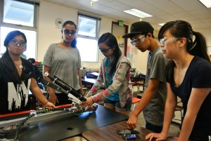
Overall, this was a fun and rewarding experience and I can’t wait for another day of learning
June 15, 2015